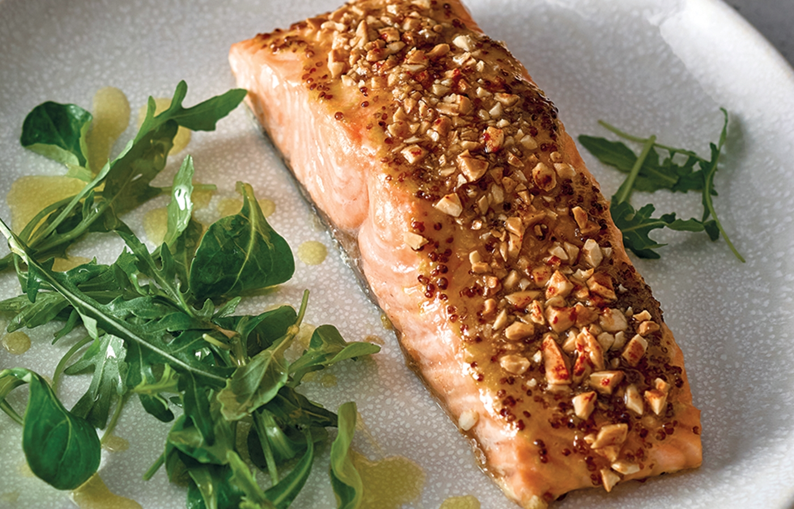

Salmón con salsa de mostaza y miel

| Ingredientes: |
- 1 filete de salmón
- 2 cucharadas de miel
- 2 cucharadas de mantequilla
- 1 cucharada de mostaza de gijon
- Un puñado de almendras(opcional)
|
Método de preparación:
- Racion/es: 1
- Tiempo de preparación: 40min
- Precalentamos el horno a 180º
- Mientras trituramos y tostamos un puñado de almendras y reservamos para luego (opcional) y preparamos la salsa de miel y mostaza. Para ello mezclamos la miel con la mostaza y un poco de mantequilla.
- Preparamos el filete de salmón en una bandeja de horno, poniendole la salsa por encima y por último las almendras
- Dejamos 10 minutos a 180ºC en la parte media del horno. Una vez terminados lo pasamos a la parte alta unos 2 minutos.